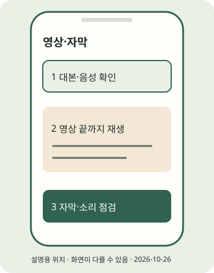

(실습) 실습편 / 5
(실습) 5. 본인 녹음과 릴스 만들기
재생과 자막·음성을 확인한 MP4를 만든다.
2026년 10월 조사 기준 · 확인일 2026-10-26 · 근거: PRAC-09 PRAC-10 PRAC-25 API-07 · E2E 한눈에 보기
진행 기록은 자바스크립트를 켜면 이 브라우저에 저장합니다.
이 실습의 흐름
정적 카드에 움직임·음성을 더한 사실만으로 추천·수익화 적격을 보장하지 않습니다. 실제 게시의 권리·표시는 실습 6과 이론 12장에서 판단합니다.

STEP 01 · 본인 내레이션 준비
본인 내레이션 준비
지금 하는 일
본인 대본을 읽어 녹음하거나 무음 연습을 선택합니다.
왜 하는지
목소리·음원 권리를 직접 확인할 수 있게 합니다.
따라 하기
- 기본은 무음+자막입니다. 녹음을 원하면 copy.json의 subtitle을 본인 말로 읽고 mp3 또는 wav로 저장합니다. 휴대폰 녹음 앱의 구체적인 버튼은 이 조사에서 확인하지 않았습니다.
- 현재 출력 폴더의 config.json에서 reel.narration을 본인 파일의 전체 경로로 고칩니다. 아래는 reel 객체 안에 넣을 필드 예시이며 config.json 전체를 이것으로 덮어쓰지 않습니다. Windows JSON 경로는 / 또는 이중 역슬래시를 씁니다.
- music은 권리를 확인한 사용자 파일만 선택합니다. tts는 silent를 유지해도 본인 narration 파일을 사용할 수 있습니다. 남의 목소리·음악·글이 섞이면 그 권리는 별도입니다.
"narration": "C:/Users/내이름/Downloads/my-voice.wav",
"music": null,
"tts": "silent"이렇게 보이면 성공
무음 연습을 유지했거나, 실제 존재하는 본인 녹음 경로가 현재 config.json에 지정됐습니다.
이렇게 보이면?
- 녹음 파일이 없으면 narration을 null로 두고 무음 연습을 먼저 마치세요.
- narration 파일을 바꾸면 다시 render·검수해야 합니다.
Windows
녹음 파일 경로 예:C:/Users/내이름/Downloads/my-voice.wav. 확장자를 .wav로 이름만 바꾸는 것은 변환이 아닙니다.macOS
녹음 파일 경로 예:/Users/내이름/Downloads/my-voice.wav. config.json 문자열 안에는 큰따옴표를 유지합니다.STEP 02 · 릴스 재생성과 끝까지 보기
릴스 재생성과 끝까지 보기
지금 하는 일
영상 파일을 다시 만들고 재생합니다.
왜 하는지
음성·자막·장면이 실제로 맞는지 파일에서 확인합니다.
따라 하기
- 아래 render 명령을 실행하고
reel.mp4를 처음부터 끝까지 재생합니다. - 기본 샘플은 1080×1920, 20초, 무음+자막입니다. 본인 녹음을 선택했다면 실제 목소리가 들리는지 확인합니다. 자막 시간 자동 음성 정렬은 지원하지 않습니다.
- 20초는 학습 예제 길이입니다. API는 MOV/MP4·H.264/HEVC·23~60fps·3초~15분·최대 300MB, 9:16 권장이라는 별도 문서 범위입니다(API-07). 앱 촬영 상한으로 옮겨 쓰지 않습니다.
- 릴스와 혼합 캐러셀의 동영상 자식은 다릅니다. 키트는 JPEG 캐러셀과 독립 릴스를 만듭니다.
이렇게 보이면 성공
검수 대기: …/output/first-post/REVIEW.md가 출력되고 reel.mp4가 재생됩니다. 기본 샘플은 20초·자막·무음이며 선택 녹음은 실제로 들립니다.
이렇게 보이면?
- 기본 무음은 실패가 아닙니다. 녹음 선택 시에도 무음이면 현재 config.json의 narration 경로를 확인하세요.
- 소리·자막 타이밍이 어긋나면 녹음을 대본 장면 길이에 맞춰 다시 편집하세요.
- 영상이 열리지 않으면 README의 FFmpeg·플레이어 오류 표를 확인하세요.
Windows
.venv\Scripts\python.exe run_pipeline.py render output/first-postmacOS
python run_pipeline.py render output/first-post지금 내 손에 있는 것
재생과 자막·음성을 확인한 MP4를 만든다. 아래 단계 확인을 모두 마쳤는지 E2E에서 다시 봅니다. 선택하지 않은 포맷·심화는 미완료로 남겨도 됩니다.